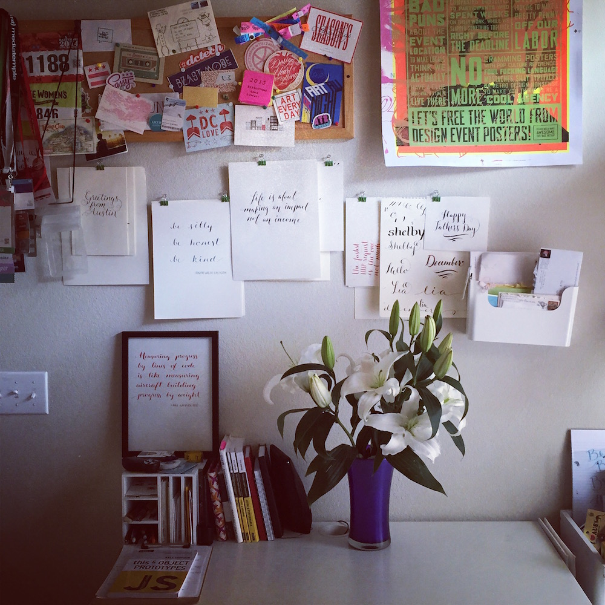

<div class="heading-area">
  <h2 class="heading--title">Instagram Filters in CSS: Hudson</h2>
</div>

<div class="live-code-area instagram">
  <div class="img-area">
    <div class="original">
      <figure class="insta-orig hudson"></figure>
      <p class="caption">Original</p>
    </div>
    <div class="filter">
      
      <p class="caption">Hudson</p>
    </div>
  </div>

  <div class="style-box-area">
  <style style="width: 75%; margin-top: -2em" class="code-editor" contenteditable>.hudson {
  -webkit-filter:
    brightness(1.2)
    contrast(.9)
    saturate(1.1);
}

.hudson:after{
  content: '';
  display: block;
  height: 100%;
  width: 100%;
  background: radial-gradient(#A6B1FF 50%, #342134);
  mix-blend-mode: multiply;
  opacity: .5;
}</style>
  </div>

<aside class="notes">
  filters
</aside>
